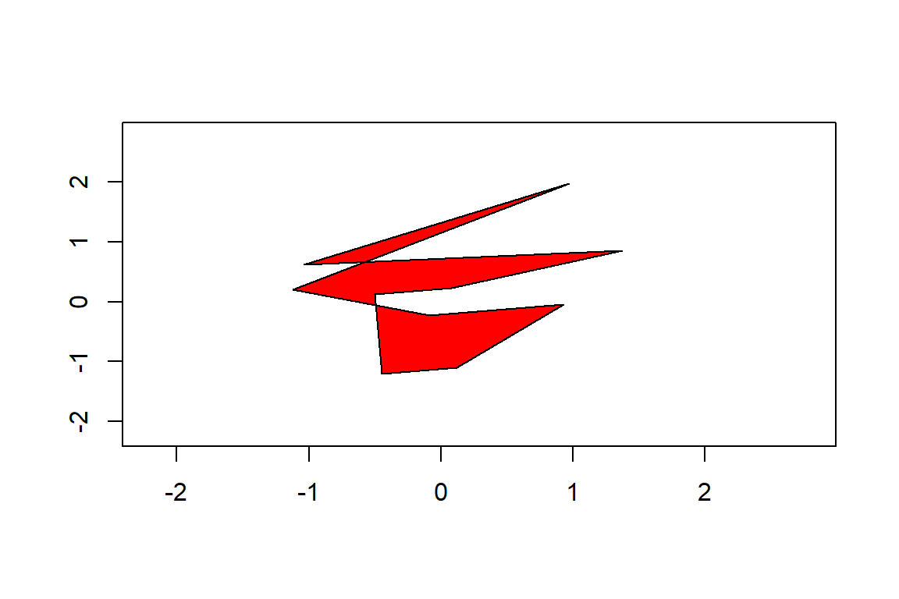
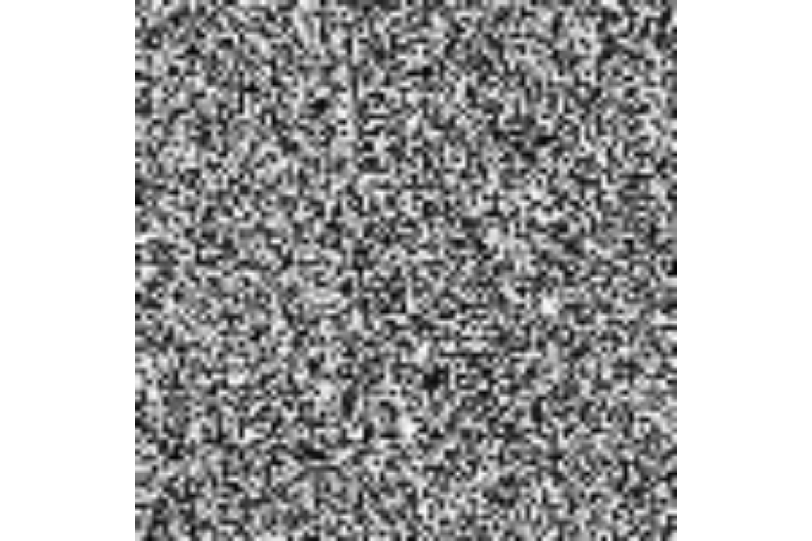
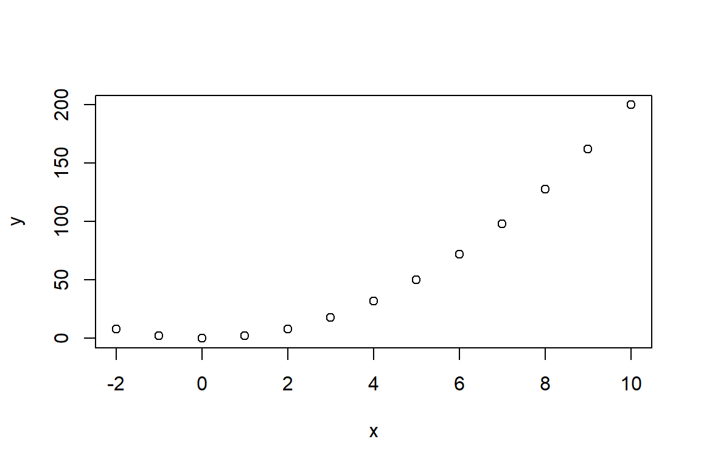
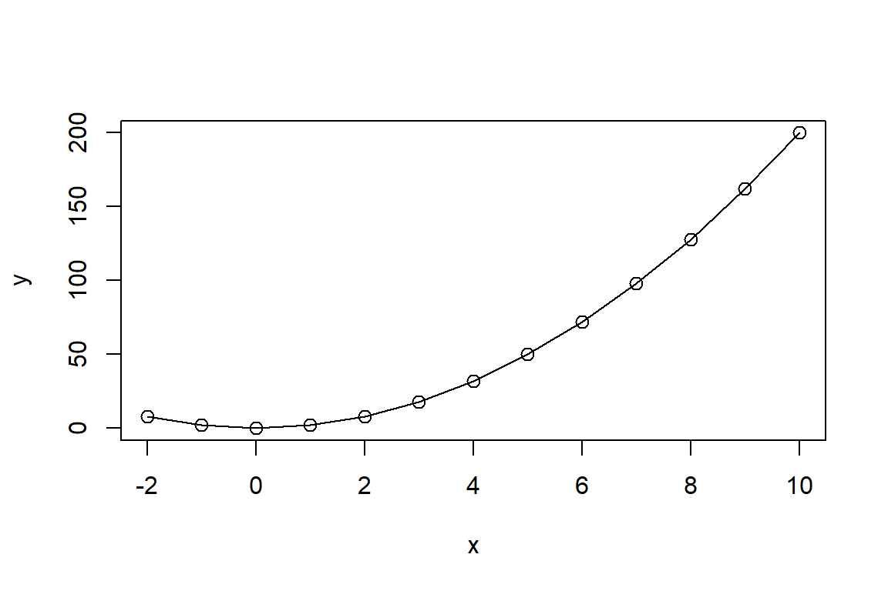
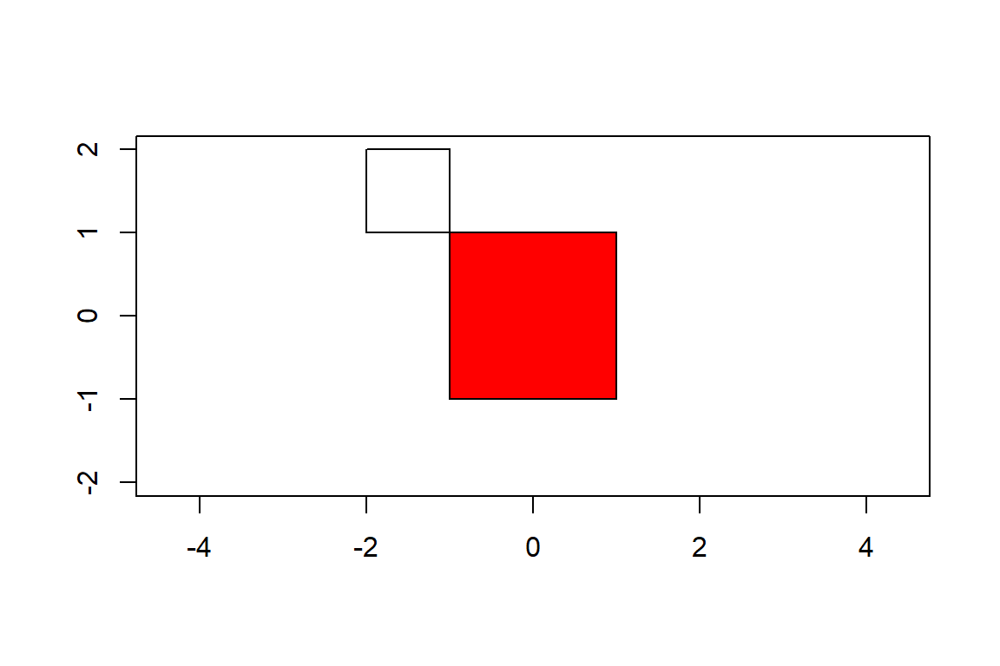
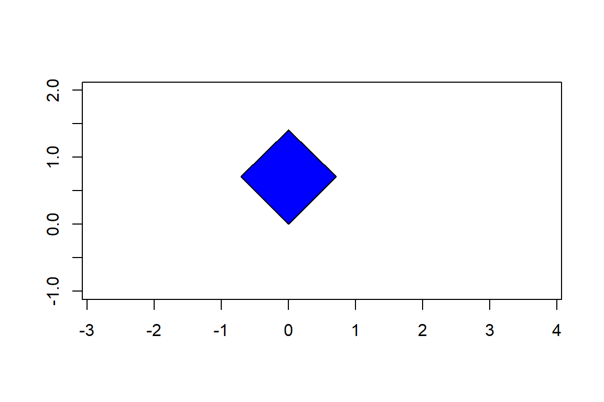
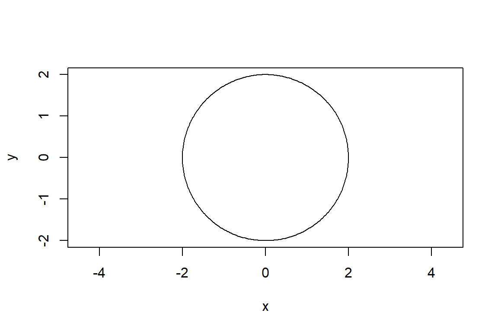
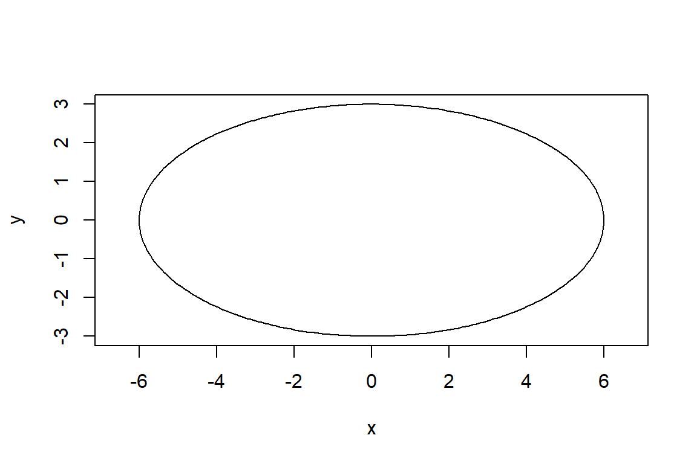
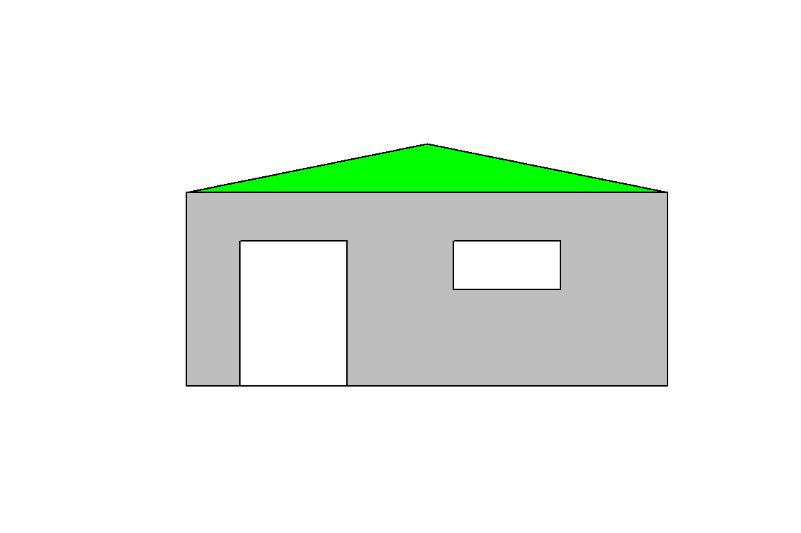
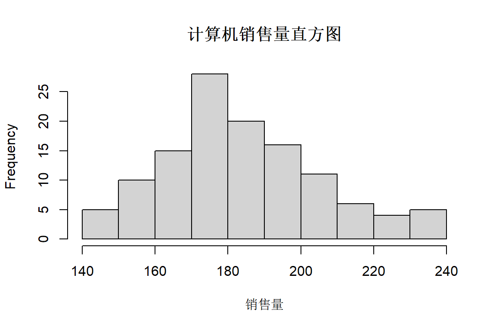

dt <- c(
41.0, 37.0, 33.0, 44.2, 30.5, 27.0, 45.0, 28.5, 31.2, 33.5, 38.5, 41.5,
42.0, 45.5, 42.5, 39.0, 38.8, 35.5, 32.5, 29.6, 32.6, 34.5, 37.5, 39.5,
42.8, 45.1, 42.8, 45.8, 39.8, 37.2, 33.8, 31.2, 29.0, 35.2, 37.8, 41.2,
43.8, 48.0, 43.6, 41.8, 36.6, 34.8, 31.0, 32.0, 33.5, 37.4, 40.8, 44.7,
40.2, 41.3, 38.8, 34.1, 31.8, 34.6, 38.3, 41.3, 30.0, 35.2, 37.5, 40.5,
38.1, 37.3, 37.1, 41.5, 29.5, 29.1, 27.5, 34.8, 36.5, 44.2, 40.0, 44.5,
40.6, 36.2, 35.8, 31.5
)2 R基础
2.1 R的安装
步骤1 官网（https://www.r-project.org/）下载R的安装包，根据自己的系统下载相应程序。R版本更新较快。尽量下载最新版本。
步骤2 双击运行安装程序。选择需要使用的语言。

步骤3 进入安装向导，点击下一步。

步骤4 选择安装位置。

步骤5 选择组件，可以根据自己的计算机选择相应的选项，也可以全部选择。

步骤6 启动选项，可以选择接受默认选项。

步骤7 选择开始菜单创建的文件夹时，可以直接点击下一步即可。

步骤8 安装完成后，在安装目录中的bin\x64目录中，双击Rgui.exe可以出现R语言的图形界面。
2.2 向量操作
2.2.1 生成向量
- 直接输入方式
已知一个钢材抗张力样本数据（见下表）
| 41 | 37 | 33 | 44.2 | 30.5 | 27 | 45 | 28.5 | 31.2 | 33.5 | 38.5 | 41.5 | |
| 42 | 45.5 | 42.5 | 39 | 38.8 | 35.5 | 32.5 | 29.6 | 32.6 | 34.5 | 37.5 | 39.5 | |
| 42.8 | 45.1 | 42.8 | 45.8 | 39.8 | 37.2 | 33.8 | 31.2 | 29 | 35.2 | 37.8 | 41.2 | |
| 43.8 | 48 | 43.6 | 41.8 | 36.6 | 34.8 | 31 | 32 | 33.5 | 37.4 | 40.8 | 44.7 | |
| 40.2 | 41.3 | 38.8 | 34.1 | 31.8 | 34.6 | 38.3 | 41.3 | 30 | 35.2 | 37.5 | 40.5 | |
| 38.1 | 37.3 | 37.1 | 41.5 | 29.5 | 29.1 | 27.5 | 34.8 | 36.5 | 44.2 | 40 | 44.5 | |
| 40.6 | 36.2 | 35.8 | 31.5 |
在R语言中，可以将表中的钢材抗张力样本数据“抽象”为一个向量，利用c构造符来实现。
如果总是手工录入数据，且待录入的数据很多时，是比较麻烦的事情。这里，可以替代的方法包括：随机模拟数据方式、冒号方式、seq方式、rep方式和文件读入方式。
- 随机模拟方式
随机模拟数据 — 模拟有放回抽样操作
#> [1] 40.0 40.0 31.0 37.0 31.0 28.5 28.5 37.0 31.0 34.5 32.0
#> [12] 37.0 37.0 27.0 28.5 31.0 48.0 34.5 31.0 31.0 27.0 32.0
#> [23] 27.0 27.0 34.5 31.0 48.0 28.5 40.0 28.5 27.0 37.0 31.0
#> [34] 32.0 37.0 27.0 31.0 40.0 34.5 32.0 40.0 48.0 28.5 34.5
#> [45] 40.0 27.0 27.0 28.5 40.0 31.0 32.0 34.5 40.0 34.5 31.0
#> [56] 48.0 37.0 27.0 28.5 34.5 34.5 48.0 32.0 40.0 34.5 28.5
#> [67] 27.0 27.0 31.0 27.0 37.0 34.5 40.0 27.0 40.0 28.5随机模拟数据 — 模拟无放回抽样操作
#> [1] 40.0 48.0 31.0 37.0 28.5随机模拟数据 — 模拟均匀分布数据
#> [1] 33.04 43.55 35.59 45.54 46.75 27.96 38.09 45.74 38.58
#> [10] 36.59 47.09 36.52 41.23 39.03 29.16 45.90 32.17 27.88
#> [19] 33.89 47.04 45.68 41.55 40.45 47.88 40.77 41.88 38.43
#> [28] 39.48 33.07 30.09 47.22 45.95 41.50 43.70 27.52 37.03
#> [37] 42.93 31.54 33.68 31.86 30.00 35.71 35.69 34.75 30.20
#> [46] 29.91 31.89 36.79 32.59 45.01 27.96 36.29 43.78 29.56
#> [55] 38.78 31.34 29.68 42.82 45.80 34.86 40.97 28.99 35.06
#> [64] 32.76 44.11 36.42 44.01 44.06 43.68 36.24 42.84 40.21
#> [73] 41.91 27.01 36.98 31.62随机模拟数据 — 模拟正态分布数据
#> [1] 32.20 33.85 42.79 35.35 35.65 43.58 37.30 28.67 31.57
#> [10] 32.77 41.12 36.80 37.00 35.55 32.22 43.93 37.49 25.17
#> [19] 38.51 32.64 29.66 33.91 29.87 31.36 31.87 26.57 39.19
#> [28] 35.77 29.31 41.27 37.13 33.52 39.48 39.39 39.11 38.44
#> [37] 37.77 34.69 33.47 33.10 31.53 33.96 28.67 45.84 41.04
#> [46] 29.38 32.99 32.67 38.90 34.58 36.27 34.86 34.79 41.84
#> [55] 33.87 42.58 27.26 37.92 35.62 36.08 36.90 32.49 33.33
#> [64] 29.91 29.64 36.52 37.24 35.27 39.61 45.25 32.54 23.45
#> [73] 40.03 31.45 31.56 40.13随机模拟数据 — 模拟卡方分布数据
#> [1] 3.385 9.472 1.084 5.417 11.894 6.564 1.800 1.030
#> [9] 9.620 6.203 6.348 5.356 3.397 9.933 7.951 4.825
#> [17] 3.617 4.341 2.282 4.734 1.089 1.993 2.049 4.039
#> [25] 4.110 4.599 7.936 7.415 6.905 4.806 5.947 1.885
#> [33] 4.364 4.495 9.549 2.079 6.358 2.590 4.740 3.727
#> [41] 4.865 5.911 2.233 1.302 2.189 5.706 6.273 3.538
#> [49] 14.110 1.671 6.006 6.518 5.169 8.342 13.584 3.568
#> [57] 2.557 3.009 7.150 4.980 1.885 2.831 5.018 6.293
#> [65] 3.897 2.865 6.104 9.070 6.471 4.022 5.674 3.573
#> [73] 5.783 3.212 9.922 3.642随机模拟数据 — 模拟T分布数据
#> [1] -0.62468 -1.37828 -0.11812 -1.59108 1.59250 2.35970
#> [7] 0.33356 0.97822 -0.99964 -0.30305 -0.07190 -0.21131
#> [13] -0.92603 0.48313 -0.11283 -0.14808 -4.15836 -0.47958
#> [19] 0.87736 1.73172 0.53784 -0.08293 -0.03040 0.38652
#> [25] -1.43482 0.12423 0.45392 3.30598 0.28938 0.04589
#> [31] 2.44382 -1.14849 -0.58404 -0.42143 -1.01063 0.44500
#> [37] -0.95023 1.04861 -0.27036 0.92737 0.29536 1.52930
#> [43] 1.71054 0.13642 0.03110 -0.75761 -1.36334 -0.18258
#> [49] 1.66812 -0.27045 1.51551 -0.84450 0.81922 0.31418
#> [55] 1.72721 -0.94592 -1.03122 0.89982 0.22418 1.81865
#> [61] 0.67598 0.78847 -0.33827 -0.85379 1.35380 0.70293
#> [67] 0.45935 -0.02080 -0.31910 -0.31635 -1.57321 -1.44435
#> [73] -0.48408 -0.01810 2.93501 -0.02391随机模拟数据 — 模拟F分布数据据
#> [1] 0.4094 0.3921 1.6761 6.7991 1.5147 1.3158 0.3878
#> [8] 1.7930 1.1394 0.7405 1.5852 0.8502 1.1580 1.0417
#> [15] 1.6144 5.4327 1.2465 6.7548 3.5345 1.7003 0.9498
#> [22] 5.0286 0.5667 2.2541 13.1448 0.9846 0.6492 4.1296
#> [29] 1.4750 1.5839 1.3149 0.8984 2.1222 0.6655 1.9410
#> [36] 2.0598 2.4209 3.1071 2.7223 0.4384 0.5575 0.9390
#> [43] 0.9952 1.8334 1.8752 1.1989 2.3117 0.9929 1.1170
#> [50] 0.5017 3.3144 3.3741 0.8700 1.9867 0.4624 0.3268
#> [57] 0.6966 1.3269 2.0312 0.4698 0.2096 0.7085 2.1412
#> [64] 0.4062 0.3908 1.1407 2.2599 5.5646 6.8823 2.2090
#> [71] 1.0334 0.3612 0.6648 0.5619 0.6812 0.2719随机模拟数据 — 模拟泊松分布数据
#> [1] 4 7 4 8 9 2 5 8 5 5 9 5 6 5 2 8 3 2
#> [19] 4 9 8 6 6 11 6 6 5 5 4 3 9 8 6 7 1 5
#> [37] 6 3 4 3 3 4 4 4 3 3 3 5 4 7 2 5 7 2
#> [55] 5 3 3 6 8 4 6 2 4 4 7 5 7 7 7 4 6 6
#> [73] 6 0 5 3- 冒号方式
#生成元素为1,2,3,...,10的向量
1:10#> [1] 1 2 3 4 5 6 7 8 9 10#生成元素为-1,0,1,2,3,4的向量
-1:4#> [1] -1 0 1 2 3 4#生成元素为110,109,108,107,...,101的向量
110:101#> [1] 110 109 108 107 106 105 104 103 102 101- seq方式
#生成从1开始，每次递增1，直至递增到10的向量
seq(1,10,by=1)#> [1] 1 2 3 4 5 6 7 8 9 10#生成从-1开始，每次递增1，直至递增到4的向量
seq(-1,4,by=1)#> [1] -1 0 1 2 3 4#生成从110开始，每次递减1，直至递减到101的向量
seq(110,101,by=-1)#> [1] 110 109 108 107 106 105 104 103 102 101#生成从1开始，每次递增2，直至递增到9的向量
seq(1,10,by=2)#> [1] 1 3 5 7 9#生成从2开始，每次递增2，直至递增到10的向量
seq(2,10,by=2)#> [1] 2 4 6 8 10#生成从1开始，每次递增0.5，直至递增到10的向量
seq(1,10,by=0.5)#> [1] 1.0 1.5 2.0 2.5 3.0 3.5 4.0 4.5 5.0 5.5 6.0
#> [12] 6.5 7.0 7.5 8.0 8.5 9.0 9.5 10.0#将区间[1,10]等分为5-1=4部分，并将等分后的端点形成一个向量
seq(1,10,length.out = 5)#> [1] 1.00 3.25 5.50 7.75 10.00#将区间[2,10]等分为5-1=4部分，并将等分后的端点形成一个向量
seq(2,10,length.out = 5)#> [1] 2 4 6 8 10#将区间[1,10]等分为19-1=18部分，并将等分后的端点形成一个向量
seq(1,10,length.out = 19)#> [1] 1.0 1.5 2.0 2.5 3.0 3.5 4.0 4.5 5.0 5.5 6.0
#> [12] 6.5 7.0 7.5 8.0 8.5 9.0 9.5 10.0- rep方式
2.2.2 读写向量的元素
#生成向量x
x = c(1,3,5,11,20,30,8,9,2)
#读出x第1个元素
x[1] #> [1] 1#读取x第2-4个元素
x[2:4] #> [1] 3 5 11#读取x第2、5、7个元素
x[c(2,5,7)] #> [1] 3 20 8#读取x第2-4以及6-8个元素
x[c(2:4,6:8)] #> [1] 3 5 11 30 8 9#将x第1个元素变为101
x[1] = 101
x#> [1] 101 3 5 11 20 30 8 9 2#将x第2-4个元素分别变为102、103和104
x[2:4] = 102:104
x#> [1] 101 102 103 104 20 30 8 9 2#将x第2、5、7个元素都变为105
x[c(2,5,7)] = 105
x#> [1] 101 105 103 104 105 30 105 9 2#> [1] 101 210 206 208 105 60 210 18 22.2.3 向量的运算
向量的加法运算
#用冒号方式生成向量x，元素为1、2、3、4、5、6
x = 1:6
#用seq方式生成向量y，元素为2、2.5、3.0、3.5、4.0、4.5
y = seq(2,4.5,by=0.5)
#两个向量相加，结果是对应元素相加
x + y#> [1] 3.0 4.5 6.0 7.5 9.0 10.5#运算之前，会先依据x的元素个数将1重复6次，形成元素为6个1的向量，
#而后再与x的对应元素相加
x + 1#> [1] 2 3 4 5 6 7#运算之前，会先依据x的元素个数向量1:2整体重复3次，
#形成元素为1、2、1、2、1、2的向量，而后再与x的对应元素相加
x + 1:2#> [1] 2 4 4 6 6 8#运算之前，会先依据x的元素个数向量1:3整体重复2次，
#形成元素为1、2、3、1、2、3的向量，而后再与x的对应元素相加
x + 1:3#> [1] 2 4 6 5 7 9#运算之前，会先依据x的元素个数扩展向量1:4，
#形成元素为1、2、3、4、1、2的向量，而后再与x的对应元素相加
x + 1:4#> Warning in x + 1:4: longer object length is not a multiple
#> of shorter object length#> [1] 2 4 6 8 6 8#运算之前，会先依据x的元素个数扩展向量1:5，
#形成元素为1、2、3、4、5、1的向量，而后再与x的对应元素相加
x + 1:5#> Warning in x + 1:5: longer object length is not a multiple
#> of shorter object length#> [1] 2 4 6 8 10 7#运算之前，会先依据向量1:12将x整体重复1次，
#形成元素为1、2、3、4、5、6、1、2、3、4、5、6的向量，
#而后再与向量1:12的对应元素相加
x + 1:12#> [1] 2 4 6 8 10 12 8 10 12 14 16 18向量的数乘运算
#用seq方式生成向量x
x = seq(1,5,length.out = 5)
#向量x的每个元素乘以2
2*x#> [1] 2 4 6 8 10#向量x的每个元素乘以1.2
1.2*x#> [1] 1.2 2.4 3.6 4.8 6.0#向量x的每个元素乘以-1
(-1)*x#> [1] -1 -2 -3 -4 -5向量的减法运算
#生成向量x和y
x = 1:6
y = seq(2,4.5,by=0.5)
#向量x前去向量y，结果是对应元素相减
x - y#> [1] -1.0 -0.5 0.0 0.5 1.0 1.5#向量相减，可以视为向量加法与向量数乘的联合运算
x + (-1)*y#> [1] -1.0 -0.5 0.0 0.5 1.0 1.5#运算之前，会先依据x的元素个数将1重复6次，形成元素为6个1的向量，
#而后再与x的对应元素相减
x - 1#> [1] 0 1 2 3 4 5#运算之前，会先依据x的元素个数将向量1:2整体重复3次，
#形成元素为1、2、1、2、1、2的向量，而后再与x的对应元素相减
x - 1:2#> [1] 0 0 2 2 4 4#运算之前，会先依据x的元素个数将向量1:3整体重复2次，
#形成元素为1、2、3、1、2、3的向量，而后再与x的对应元素相减
x - 1:3#> [1] 0 0 0 3 3 3#运算之前，会先依据x的元素个数扩展向量1:4，
#形成元素为1、2、3、4、1、2的向量，而后再与x的对应元素相减
x - 1:4#> Warning in x - 1:4: longer object length is not a multiple
#> of shorter object length#> [1] 0 0 0 0 4 4#运算之前，会先依据x的元素个数扩展向量1:5，
#形成元素为1、2、3、4、5、1的向量，而后再与x的对应元素相减
x - 1:5#> Warning in x - 1:5: longer object length is not a multiple
#> of shorter object length#> [1] 0 0 0 0 0 5#运算之前，会先依据向量1:12将x整体重复1次，
#形成元素为1、2、3、4、5、6、1、2、3、4、5、6的向量，
#而后再与向量1:12的对应元素相减
x - 1:12#> [1] 0 0 0 0 0 0 -6 -6 -6 -6 -6 -6向量的乘法运算
#生成向量x和y
x = 1:3
y = 6:4
#计算x与y的对应元素的乘积
x * y#> [1] 6 10 12向量的内积运算
#生成向量x和y
x <- 1:3
y <- 6:4
#计算x与y的内积
x %*% y#> [,1]
#> [1,] 28向量的转置运算
#生成向量x
x <- 1:3
#默认情况下，向量都是列向量模式
x#> [1] 1 2 3#x转置之后，得到1行3列的矩阵
t(x)#> [,1] [,2] [,3]
#> [1,] 1 2 3向量元素的个数
#生成向量x
x = seq(1,10.2,by=0.31)
x#> [1] 1.00 1.31 1.62 1.93 2.24 2.55 2.86 3.17 3.48 3.79 4.10
#> [12] 4.41 4.72 5.03 5.34 5.65 5.96 6.27 6.58 6.89 7.20 7.51
#> [23] 7.82 8.13 8.44 8.75 9.06 9.37 9.68 9.99#获取x包含的向量个数
length(x)#> [1] 30向量元素求和运算
#生成向量x
x = 1:100
#计算x所有元素的和
sum(x)#> [1] 5050向量元素均值运算
向量元素最大值运算
#> [1] 8.468向量元素最小值运算
#> [1] 2.5向量元素排序运算 — 升序
#> [1] 15 19 14 3 10 18 22 11 5 20#以sort方式对x的元素按按从小到大进行排序
sort(x)#> [1] 3 5 10 11 14 15 18 19 20 22#或者以order方式获得x按从小到大顺序排列的角标位置
order(x)#> [1] 4 9 5 8 3 1 6 2 10 7#依据order返回的结果对x的元素按从小到大的顺序排列
x[order(x)]#> [1] 3 5 10 11 14 15 18 19 20 22向量元素排序运算 — 降序
#> [1] 15 19 14 3 10 18 22 11 5 20#以sort方式对x的元素按从大到小进行排序
sort(x,decreasing = T)#> [1] 22 20 19 18 15 14 11 10 5 3向量元素排序运算
#> [1] 15 19 14 3 10 18 22 11 5 20#或者以order方式获得x按从大到小顺序排列的角标位置
order(x, decreasing = T)#> [1] 7 10 2 6 1 3 8 5 9 4#依据order返回的结果对x的元素按从大到小的顺序排列
x[order(x, decreasing = T)] #> [1] 22 20 19 18 15 14 11 10 5 3向量元素的取值范围
#> [1] -1.265 1.715向量元素倒序运算
向量元素幂运算
#生成向量x
x = 1:12
#计算x中每个元素的平方
x^2#> [1] 1 4 9 16 25 36 49 64 81 100 121 144#计算x中每个元素的平方根
x^(1/2)#> [1] 1.000 1.414 1.732 2.000 2.236 2.449 2.646 2.828 3.000
#> [10] 3.162 3.317 3.464#计算x中每个元素的倒数
x^(-1)#> [1] 1.00000 0.50000 0.33333 0.25000 0.20000 0.16667 0.14286
#> [8] 0.12500 0.11111 0.10000 0.09091 0.08333向量元素指数运算
#生成向量x
x = 1:10
#计算以2为底，以x的每个元素为指数的值
2^x#> [1] 2 4 8 16 32 64 128 256 512 1024向量元素对数运算
#生成向量x
x <- 2^(1:10)
#计算x的每个元素的以2为底的对数值
log(x,base = 2)#> [1] 1 2 3 4 5 6 7 8 9 10#计算x的每个元素的自然对数值
log(x)#> [1] 0.6931 1.3863 2.0794 2.7726 3.4657 4.1589 4.8520 5.5452
#> [9] 6.2383 6.9315#计算x的每个元素的常用对数值
log(x,base = 10)#> [1] 0.3010 0.6021 0.9031 1.2041 1.5051 1.8062 2.1072 2.4082
#> [9] 2.7093 3.0103向量元素三角运算
#生成向量x
x = seq(0,2*pi,by=pi/4)
x#> [1] 0.0000 0.7854 1.5708 2.3562 3.1416 3.9270 4.7124 5.4978
#> [9] 6.2832#计算x的每个元素的正弦
sin(x)#> [1] 0.000e+00 7.071e-01 1.000e+00 7.071e-01 1.225e-16
#> [6] -7.071e-01 -1.000e+00 -7.071e-01 -2.449e-16#计算x的每个元素的余弦
cos(x)#> [1] 1.000e+00 7.071e-01 6.123e-17 -7.071e-01 -1.000e+00
#> [6] -7.071e-01 -1.837e-16 7.071e-01 1.000e+00向量元素的包含运算
#生成向量x，y
x = 1:3
y = 2:6
#查看x的哪些向量包含于y
x %in% y#> [1] FALSE TRUE TRUE向量元素比较运算
#生成向量x
x = 1:11
#计算x的元素均值，保存在m中
m = mean(x)
#判断x的元素是否大于均值m，返回的结果为TRUE，则表明相应元素大于均值，
#反之表明相应元素不大于均值
x > m#> [1] FALSE FALSE FALSE FALSE FALSE FALSE TRUE TRUE TRUE
#> [10] TRUE TRUE#判断x的元素是否等于均值m，返回的结果为TRUE，则表明相应元素等于均值，
#反之表明相应元素不等于均值
x == m#> [1] FALSE FALSE FALSE FALSE FALSE TRUE FALSE FALSE FALSE
#> [10] FALSE FALSE#判断x的元素是否不等于均值m，返回的结果为TRUE，则表明相应元素不等于均值，
#反之表明相应元素等于均值
x != m#> [1] TRUE TRUE TRUE TRUE TRUE FALSE TRUE TRUE TRUE
#> [10] TRUE TRUE#判断x的元素是否小于均值m，返回的结果为TRUE，则表明相应元素小于均值，
#反之表明相应元素不小于均值
x < m#> [1] TRUE TRUE TRUE TRUE TRUE FALSE FALSE FALSE FALSE
#> [10] FALSE FALSE#生成向量x
x = 1:10
#判断x的元素是否小于3，若小于3则结果为不合格，反之结果为合格
ifelse(x<3,"不合格","合格")#> [1] "不合格" "不合格" "合格" "合格" "合格" "合格"
#> [7] "合格" "合格" "合格" "合格"#> [1] "不及格" "不及格" "及格" "及格" "及格" "良好"
#> [7] "良好" "良好" "良好" "良好"向量元素条件查询
#> [1] 7 8 9 10 11#查询x的哪些元素等于均值m
which(x==m)#> [1] 6#查询x的哪些元素不等于均值m
which(x!=m)#> [1] 1 2 3 4 5 7 8 9 10 11#查询x的哪些元素小于均值m
which(x<m)#> [1] 1 2 3 4 5#> [1] 11 10 9 8 7#查询x的哪些元素等于均值m，并获取这些元素
idx <- which(x==m)
x[idx]#> [1] 6#查询x的哪些元素不等于均值m，并获取这些元素
idx <- which(x!=m)
x[idx]#> [1] 3 11 2 10 5 4 9 8 1 7#查询x的哪些元素小于均值m，并获取这些元素
idx <- which(x<m)
x[idx]#> [1] 3 2 5 4 1逻辑向量求和
对于元素为逻辑值的向量求和，可以统计其中值为TRUE的元素个数。
#> [1] 5利用逻辑向量求和，可以统计一个向量vec2中有多少个元素属于另一个向量vec1：
#> [1] 15 19 14 3 10 18 22 11 5 20#> [1] 9统计向量各元素取值的频数
向量的直方图
#> x.cut1
#> (40.3,45] (45,49.7] (49.7,54.4] (54.4,59.1] (59.1,63.8]
#> 2 3 5 5 5
#> (63.8,68.5] (68.5,73.2] (73.2,77.9]
#> 5 2 3#> x.cut2
#> (40,45] (45,50] (50,55] (55,60] (60,65] (65,70] (70,75]
#> 2 4 5 4 8 2 2
#> (75,80]
#> 3#> x.cut3
#> [40,50) [50,60) [60,70) [70,80)
#> 6 9 10 5对一组数划分区间，统计频次数？在后面的直方图中有用
将矩阵f的如下运算变成向量操作： \[ m_{ji} = \sum_{x,y} f(x,y)*x^j*y^i \]
2.3 Factors操作
因子Factors是一种特殊向量，可以用来表示一些具前后、层级顺序（体现为因子水平）的分类变量，。
#> [1] MALE FEMALE MALE
#> Levels: FEMALE MALE#> [1] MALE FEMALE MALE
#> Levels: MALE FEMALE#> blood
#> A B AB O
#> 1 0 1 1#> score
#> 不及格 及格 良 优 中
#> 8 7 8 10 7#> score1
#> 优 良 中 及格 不及格
#> 7 6 9 12 6#生成包含5个字母a、b、c、d和e的因子型向量tmp
tmp = factor(letters[1:5])
#更改tmp的第二个元素为e
tmp[2] = "e"
tmp#> [1] a e c d e
#> Levels: a b c d e#若待更改的值不在因子水平中，更改操作会达不到预期
tmp[3] <- "z"#> Warning in `[<-.factor`(`*tmp*`, 3, value = "z"): invalid
#> factor level, NA generatedtmp#> [1] a e <NA> d e
#> Levels: a b c d e2.4 列表操作
#> $subject.name
#> [1] "John" "Peter" "Alice"
#>
#> $temperature
#> [1] 98.1 98.6 101.4
#>
#> $gender
#> [1] MALE FEMALE MALE
#> Levels: MALE FEMALE
#>
#> $blood
#> [1] O AB A
#> Levels: A B AB O#查询三个病人的姓名
patients$subject.name#> [1] "John" "Peter" "Alice"#查询三个病人的体温和性别
patients[2:3]#> $temperature
#> [1] 98.1 98.6 101.4
#>
#> $gender
#> [1] MALE FEMALE MALE
#> Levels: MALE FEMALE#或者
patients[c("temperature","gender")]#> $temperature
#> [1] 98.1 98.6 101.4
#>
#> $gender
#> [1] MALE FEMALE MALE
#> Levels: MALE FEMALE#查询第二个病人的血型
patients$blood[2]#> [1] AB
#> Levels: A B AB O#查询是否有姓名为Alice的病人
any(patients$subject.name=="Alice")#> [1] TRUE#> [[1]]
#> [1] -0.50 0.13
#>
#> [[2]]
#> [1] 0.08 0.23
#>
#> [[3]]
#> [1] 1.37 0.86
#>
#> [[4]]
#> [1] -1.04 0.62
#>
#> [[5]]
#> [1] 0.97 1.97
#>
#> [[6]]
#> [1] -1.12 0.20
#>
#> [[7]]
#> [1] -0.09 -0.23
#>
#> [[8]]
#> [1] 0.93 -0.05
#>
#> [[9]]
#> [1] 0.12 -1.10
#>
#> [[10]]
#> [1] -0.45 -1.21
2.5 数据框操作
#生成一个数据框PtData，包含9个病人的姓名、体温、流感状态、性别、血型
subject.name = c("John","Peter","Alice","Philip",
"Jack","Green","Mark","Lili","Ama")
temperature = c(98.1,98.6,101.4,90.0,95.2,96.6,97.8,95.1,98.9)
flu.status = c(TRUE,FALSE,FALSE,TRUE,FALSE,FALSE,TRUE,FALSE,FALSE)
gender = factor(rep(c("MALE", "FEMALE", "MALE"),3),
levels = c("MALE","FEMALE"))
blood = factor(rep(c("O", "AB", "A"),each=3),
levels = c("A", "B", "AB", "O"))
PtData = data.frame(subject.name, temperature, flu.status,
gender, blood, stringsAsFactors = FALSE)
#查看PtData的数据结构
str(PtData)#> 'data.frame': 9 obs. of 5 variables:
#> $ subject.name: chr "John" "Peter" "Alice" "Philip" ...
#> $ temperature : num 98.1 98.6 101.4 90 95.2 ...
#> $ flu.status : logi TRUE FALSE FALSE TRUE FALSE FALSE ...
#> $ gender : Factor w/ 2 levels "MALE","FEMALE": 1 2 1 1 2 1 1 2 1
#> $ blood : Factor w/ 4 levels "A","B","AB","O": 4 4 4 3 3 3 1 1 1#获取PtData的列名称
names(PtData)#> [1] "subject.name" "temperature" "flu.status"
#> [4] "gender" "blood"#查看PtData的前5个病人的数据
head(PtData,5)#> subject.name temperature flu.status gender blood
#> 1 John 98.1 TRUE MALE O
#> 2 Peter 98.6 FALSE FEMALE O
#> 3 Alice 101.4 FALSE MALE O
#> 4 Philip 90.0 TRUE MALE AB
#> 5 Jack 95.2 FALSE FEMALE AB#查询第一个病人的姓名
PtData$subject.name[1]#> [1] "John"#或者
PtData[1,"subject.name"]#> [1] "John"#或者
PtData[1,1]#> [1] "John"#查询九个病人的姓名
PtData$subject.name #返回的是向量#> [1] "John" "Peter" "Alice" "Philip" "Jack" "Green"
#> [7] "Mark" "Lili" "Ama"#或者
PtData[,1] #返回的是向量#> [1] "John" "Peter" "Alice" "Philip" "Jack" "Green"
#> [7] "Mark" "Lili" "Ama"#或者
PtData[1] #返回的不是向量，而是数据框#> subject.name
#> 1 John
#> 2 Peter
#> 3 Alice
#> 4 Philip
#> 5 Jack
#> 6 Green
#> 7 Mark
#> 8 Lili
#> 9 Ama#查询九个病人的姓名和体温
PtData[c("subject.name","temperature")]#> subject.name temperature
#> 1 John 98.1
#> 2 Peter 98.6
#> 3 Alice 101.4
#> 4 Philip 90.0
#> 5 Jack 95.2
#> 6 Green 96.6
#> 7 Mark 97.8
#> 8 Lili 95.1
#> 9 Ama 98.9#或者
PtData[c(1,2)]#> subject.name temperature
#> 1 John 98.1
#> 2 Peter 98.6
#> 3 Alice 101.4
#> 4 Philip 90.0
#> 5 Jack 95.2
#> 6 Green 96.6
#> 7 Mark 97.8
#> 8 Lili 95.1
#> 9 Ama 98.9#查询第1-3个病人的姓名和流感状态
PtData[1:3,c("subject.name","flu.status")]#> subject.name flu.status
#> 1 John TRUE
#> 2 Peter FALSE
#> 3 Alice FALSE#或者
PtData[1:3,c(1,3)]#> subject.name flu.status
#> 1 John TRUE
#> 2 Peter FALSE
#> 3 Alice FALSE#查询第一个病人信息
PtData[1,]#> subject.name temperature flu.status gender blood
#> 1 John 98.1 TRUE MALE O#查询姓名为Alice的病人信息
PtData[PtData$subject.name=="Alice",]#> subject.name temperature flu.status gender blood
#> 3 Alice 101.4 FALSE MALE O#> temperature gender
#> 1 98.1 MALE
#> 3 101.4 MALE#> temperature gender
#> 1 98.1 MALE
#> 3 101.4 MALE
#> 4 90.0 MALE
#> 5 95.2 FEMALE
#> 6 96.6 MALE
#> 7 97.8 MALE
#> 8 95.1 FEMALE
#> 9 98.9 MALE#查询数据框的行数和列数
dim(PtData) #同时返回行数和列数#> [1] 9 5nrow(PtData) #只返回行数#> [1] 9ncol(PtData) #只返回列数#> [1] 52.6 矩阵操作
留意如何生成像素横坐标和纵坐标映射矩阵
对矩阵元素进行order排序，找到最大的10个（用于后面的模板匹配）
#> [,1] [,2] [,3]
#> [1,] 3 6 9
#> [2,] 12 11 8
#> [3,] 10 5 1
#> [4,] 2 4 7#> 2 1
#> 2 2
#> 3 1
#> 1 3
#> 2 3
#> 4 3
#> 1 2
#> 3 2
#> 4 2
#> 1 1
#> 4 1
#> 3 32.6.1 生成矩阵
示例
生成如下矩阵：
\[ \left[ \begin{matrix} 3 & 10 & 9 \\ 4 & 7 & 8 \\ 2 & 1 & 5 \end{matrix} \right] \]
#> [,1] [,2] [,3]
#> [1,] 3 10 9
#> [2,] 4 7 8
#> [3,] 2 1 5若不要byrow=T，会生成如下的矩阵：
\[ \left[ \begin{matrix} 3 & 4 & 2 \\ 10 & 7 & 1 \\ 9 & 8 & 5 \end{matrix} \right] \] 示例
生成如下矩阵：
\[ \left[ \begin{matrix} 1 & 4 & 7 \\ 2 & 5 & 8 \\ 3 & 6 & 9 \end{matrix} \right] \]
matrix(1:9,nr=3,nc=3)#> [,1] [,2] [,3]
#> [1,] 1 4 7
#> [2,] 2 5 8
#> [3,] 3 6 9再生成如下矩阵：
\[ \left[ \begin{matrix} a & b & c & d \\ e & f & g & h \\ i & j & k & l \end{matrix} \right] \]
matrix(letters[1:12],nr=3,byrow = T)#> [,1] [,2] [,3] [,4]
#> [1,] "a" "b" "c" "d"
#> [2,] "e" "f" "g" "h"
#> [3,] "i" "j" "k" "l"示例
生成随机矩阵：
#> [,1] [,2] [,3]
#> [1,] 11 9 7
#> [2,] 5 4 12
#> [3,] 3 1 10#> [,1] [,2] [,3]
#> [1,] 76.11 79.98 70.27
#> [2,] 69.44 55.33 64.32
#> [3,] 92.87 82.01 72.82#> [,1] [,2] [,3]
#> [1,] -21.300 -54.33 -26.91
#> [2,] -6.445 71.89 92.69
#> [3,] -1.252 37.67 51.32示例
用outer方式生成矩阵：
x <- 1:3
y <- 4:7
outer(x,y,"*")#> [,1] [,2] [,3] [,4]
#> [1,] 4 5 6 7
#> [2,] 8 10 12 14
#> [3,] 12 15 18 21示例
用修改维度方式的从向量生成矩阵
#> [,1] [,2] [,3] [,4] [,5] [,6] [,7] [,8]
#> [1,] -0.56 -0.69 0.50 -0.63 0.90 -0.69 0.78 -1.55
#> [2,] -0.23 -0.45 -1.97 -1.69 0.88 -0.21 -0.08 0.58
#> [3,] 1.56 1.22 0.70 0.84 0.82 -1.27 0.25 0.12
#> [4,] 0.07 0.36 -0.47 0.15 0.69 2.17 -0.03 0.22
#> [5,] 0.13 0.40 -1.07 -1.14 0.55 1.21 -0.04 0.38
#> [6,] 1.72 0.11 -0.22 1.25 -0.06 -1.12 1.37 -0.50
#> [7,] 0.46 -0.56 -1.03 0.43 -0.31 -0.40 -0.23 -0.33
#> [8,] -1.27 1.79 -0.73 -0.30 -0.38 -0.47 1.52 -1.022.6.2 读写矩阵的元素
已知一个3行5列矩阵：
\[ m = \left[ \begin{matrix} 3.9 & 2.2 & 4.1 & 3.2 & 3.8 \\ 2.7 & 2.6 & 2.6 & 2.5 & 3.8 \\ 4.9 & 2.4 & 4.7 & 3.9 & 2.9 \\ \end{matrix} \right] \]
解决如下问题：
- 读出m第1行的第1列元素
- 读取m第2行的第2-4列元素
- 读取m第1-2行的第2列元素
- 读取m第2-3行的第3-5列元素
- 读取m第2-3行的第1-2列以及第5列元素
- 将m第1行的第1列元素变为0
- 将m第2行的第2-4列元素分别变为1.1,1.2,1.3
- 将m第1-2行的第2列元素变为它们各自的相反数
- 将m第2-3行的第3-5列元素变为-1
- 将m第2-3行的第1-2列以及第5列元素变为它们各自的倒数
- 将m第1行的第1列元素变为0
- 将m第2行的第2-4列元素分别变为1.1,1.2,1.3
- 将m第1-2行的第2列元素变为它们各自的相反数
- 将m第2-3行的第3-5列元素变为-1
- 将m第2-3行的第1-2列以及第5列元素变为它们各自的倒数
#> [1] 3.9#读取m第2行的第2-4列元素
m[2,2:4]#> [1] 2.6 2.6 2.5#读取m第1-2行的第2列元素
m[1:2,2]#> [1] 2.2 2.6#读取m第2-3行的第3-5列元素
m[2:3,3:5]#> [,1] [,2] [,3]
#> [1,] 2.6 2.5 3.8
#> [2,] 4.7 3.9 2.9#读取m第2-3行的第1-2列以及第5列元素
m[2:3,c(1:2,5)]#> [,1] [,2] [,3]
#> [1,] 2.7 2.6 3.8
#> [2,] 4.9 2.4 2.92.6.3 矩阵的运算
矩阵的加法运算
#> [,1] [,2] [,3]
#> [1,] 13 16 11
#> [2,] 16 14 8#m的每个数都加上3，其中有一个隐含的操作：
#R语言会自动依据m的行数和列数生成2行3列的元素全为3的矩阵
m + 3#> [,1] [,2] [,3]
#> [1,] 8 7 5
#> [2,] 9 6 4矩阵的数乘运算
#> [,1] [,2] [,3]
#> [1,] 4.8 2.4 6.0
#> [2,] 7.2 1.2 3.6矩阵的减法运算
#> [,1] [,2] [,3]
#> [1,] -1 -7 -9
#> [2,] -6 -10 -3矩阵的乘法运算
#> [,1] [,2] [,3] [,4]
#> [1,] 74 86 102 70
#> [2,] 64 51 62 23矩阵元素的取值范围
#> [1] 7.20 18.58将矩阵元素取值映射到新的取值区间
设矩阵元素的最小值和最大值分别为\(minV\)、\(maxV\)，可以依据如下公式将其元素取值映射到\([a,b]\)区间上： \[ newV = oldV \times \frac{b-a}{maxV-minV} - minV \times \frac{b-a}{maxV-minV}+a \]
#> [,1] [,2] [,3]
#> [1,] 0 237 77
#> [2,] 37 71 255矩阵的转置运算
#> [,1] [,2]
#> [1,] 6 1
#> [2,] 2 3
#> [3,] 4 5矩阵的行数与列数
矩阵的行（列）向量操作
#> [1] 3#求矩阵各行元素的均值
apply(m,1,mean)#> [1] 3 8 13#求矩阵第一列元素的均值
mean(m[,1])#> [1] 6#求矩阵各列元素的均值
apply(m,2,mean)#> [1] 6 7 8 9 10#求矩阵各行元素的最大值、最小值、和
apply(m,1,max)#> [1] 5 10 15apply(m,1,min)#> [1] 1 6 11apply(m,1,sum)#> [1] 15 40 65#求矩阵各列元素的最大值、最小值、和
apply(m,2,max)#> [1] 11 12 13 14 15apply(m,2,min)#> [1] 1 2 3 4 5apply(m,2,sum)#> [1] 18 21 24 27 30矩阵的拼接
示例
已知如下方程组：
\[ \begin{cases} 2x_1+x_2-5x_3+x_4=8\\ x_1-3x_2-6x_4=9\\ 2x_2-x_3+2x_4=-5\\ x_1+4x_2-7x_3+6x_4=0 \end{cases} \] 可以通过如下代码生成方程组的增广矩阵：
#> b
#> [1,] 2 1 -5 1 8
#> [2,] 1 -3 0 -6 9
#> [3,] 0 2 -1 2 -5
#> [4,] 1 4 -7 6 0示例
已知矩阵：
\[ m = \left[ \begin{matrix} 1 & 2 & 3 \\ 1 & 1 & 2 \\ 0 & 1 & 1 \\ \end{matrix} \right] \]
可以通过如下代码在\(m\)右边拼接一个3阶单位矩阵：
#> [,1] [,2] [,3] [,4] [,5] [,6]
#> [1,] 1 2 3 1 0 0
#> [2,] 1 1 2 0 1 0
#> [3,] 0 1 1 0 0 1也可以通过如下代码在\(m\)的下边拼接一个3阶单位矩阵：
#> [,1] [,2] [,3]
#> [1,] 1 2 3
#> [2,] 1 1 2
#> [3,] 0 1 1
#> [4,] 1 0 0
#> [5,] 0 1 0
#> [6,] 0 0 1- 矩阵的秩
\[ \left[ \begin{matrix} 2 & -1 & -1 & 1 & 2 \\ 1 & 1 & -2 & 1 & 4 \\ 4 & -6 & 2 & -2 & 4 \\ 3 & 6 & -9 & 7 & 9 \end{matrix} \right] \]
#> $qr
#> [,1] [,2] [,3] [,4] [,5]
#> [1,] -5.4772 1.2780 -2.9212 4.199e+00 -9.311e+00
#> [2,] 0.1826 -8.5069 -6.7867 8.507e+00 -5.161e+00
#> [3,] 0.7303 -0.5621 0.6385 -2.844e-15 -1.915e+00
#> [4,] 0.5477 0.8128 -0.4842 -1.471e-15 2.220e-15
#>
#> $rank
#> [1] 3
#>
#> $qraux
#> [1] 1.365e+00 1.153e+00 1.875e+00 1.471e-15 2.220e-15
#>
#> $pivot
#> [1] 1 2 4 3 5
#>
#> attr(,"class")
#> [1] "qr"#也可以直接提取出rank元素的值
qr(m)$rank#> [1] 3方阵的行列与逆
已知如下方程组：
\[ \begin{cases} 2x_1+x_2-5x_3+x_4=8\\ x_1-3x_2-6x_4=9\\ 2x_2-x_3+2x_4=-5\\ x_1+4x_2-7x_3+6x_4=0 \end{cases} \] 可以通过如下代码求系数矩阵（方阵）的行列式：
#> [1] 27#由于A的行列式不为0，则A存在逆矩阵，可以用如下代码求A的逆
solve(A)#> [,1] [,2] [,3] [,4]
#> [1,] 1.33333 -0.6667 0.3333 -1.0000
#> [2,] -0.07407 0.2593 1.1481 -0.1111
#> [3,] 0.37037 -0.2963 0.2593 -0.4444
#> [4,] 0.25926 -0.4074 -0.5185 -0.1111#> [,1] [,2] [,3] [,4]
#> [1,] 1 0 0 0
#> [2,] 0 1 0 0
#> [3,] 0 0 1 0
#> [4,] 0 0 0 1矩阵的特征值与特征向量
已知矩阵：
\[ \left[ \begin{matrix} 2 & -1 & -1 & 1 \\ 1 & 1 & -2 & 1 \\ 4 & -6 & 2 & -2 \\ 3 & 6 & -9 & 7 \end{matrix} \right] \]
#> eigen() decomposition
#> $values
#> [1] 1.093e+01 2.246e+00 -1.181e+00 7.686e-16
#>
#> $vectors
#> [,1] [,2] [,3] [,4]
#> [1,] -0.1174 0.44940 -0.2083 -5.774e-01
#> [2,] -0.1604 0.04271 -0.3821 -5.774e-01
#> [3,] 0.2663 0.54958 -0.7612 -5.774e-01
#> [4,] -0.9432 0.70298 -0.4808 9.180e-16求方程组
\[ \begin{cases} 2x_1+x_2-5x_3+x_4=8\\ x_1-3x_2-6x_4=9\\ 2x_2-x_3+2x_4=-5\\ x_1+4x_2-7x_3+6x_4=0 \end{cases} \]
#> [1] TRUE#> [1] 3 -4 -1 1#> [,1]
#> [1,] 3
#> [2,] -4
#> [3,] -1
#> [4,] 1矩阵元素的比较
#> [,1] [,2] [,3] [,4] [,5]
#> [1,] "不合格" "合格" "合格" "合格" "合格"
#> [2,] "不合格" "合格" "合格" "合格" "合格"#> [,1] [,2] [,3] [,4] [,5]
#> [1,] "不及格" "及格" "及格" "良好" "良好"
#> [2,] "不及格" "及格" "良好" "良好" "良好"查询表运算
#> [,1] [,2] [,3] [,4]
#> [1,] 1 3 5 7
#> [2,] 2 4 6 8#利用查询表，将x中属于[1,4]的数对应到1，属于[5-8]的数对应到2
lookuptbl[x]#> [1] 1 1 1 1 2 2 2 2#> [,1] [,2] [,3] [,4]
#> [1,] 1 1 2 2
#> [2,] 1 1 2 2矩阵的对数运算
#> [,1] [,2] [,3] [,4] [,5]
#> [1,] 0.0000 1.099 1.609 1.946 2.197
#> [2,] 0.6931 1.386 1.792 2.079 2.303矩阵元素均一化
#> [,1] [,2] [,3] [,4] [,5]
#> [1,] 0.01818 0.05455 0.09091 0.1273 0.1636
#> [2,] 0.03636 0.07273 0.10909 0.1455 0.1818矩阵元素的最大最小值方式归一化
#> [,1] [,2] [,3] [,4] [,5]
#> [1,] 0.0000 0.2222 0.4444 0.6667 0.8889
#> [2,] 0.1111 0.3333 0.5556 0.7778 1.0000分块矩阵对角换位
已知一个划分为四块的矩阵：

将其转变为：

#生成矩阵
m = matrix(0,nr=6,nc=6)
m[1,1] = 1
m[1,6] = 2
m[6,6] = 3
m[6,1] = 4
m#> [,1] [,2] [,3] [,4] [,5] [,6]
#> [1,] 1 0 0 0 0 2
#> [2,] 0 0 0 0 0 0
#> [3,] 0 0 0 0 0 0
#> [4,] 0 0 0 0 0 0
#> [5,] 0 0 0 0 0 0
#> [6,] 4 0 0 0 0 3#将矩阵均分成4块
block1 = m[1:3,1:3]
block2 = m[1:3,4:6]
block3 = m[4:6,4:6]
block4 = m[4:6,1:3]
#对按对角线方式互换两块位置，即block1与block3换位位置、
#block2与block4互换位置，结果保留在m1中
m1 = m
m1[1:3,1:3] = block3
m1[4:6,4:6] = block1
m1[1:3,4:6] = block4
m1[4:6,1:3] = block2
m1#> [,1] [,2] [,3] [,4] [,5] [,6]
#> [1,] 0 0 0 0 0 0
#> [2,] 0 0 0 0 0 0
#> [3,] 0 0 3 4 0 0
#> [4,] 0 0 2 1 0 0
#> [5,] 0 0 0 0 0 0
#> [6,] 0 0 0 0 0 02.7 数组操作
2.7.1 生成数组
#生成一维数组（如同向量）
ar1 = array(1:24)
ar1#> [1] 1 2 3 4 5 6 7 8 9 10 11 12 13 14 15 16 17 18
#> [19] 19 20 21 22 23 24#> [,1] [,2] [,3] [,4] [,5] [,6] [,7] [,8] [,9] [,10]
#> [1,] 1 3 5 7 9 11 13 15 17 19
#> [2,] 2 4 6 8 10 12 14 16 18 20
#> [,11] [,12]
#> [1,] 21 23
#> [2,] 22 24#> , , 1
#>
#> [,1] [,2] [,3] [,4]
#> [1,] 1 3 5 7
#> [2,] 2 4 6 8
#>
#> , , 2
#>
#> [,1] [,2] [,3] [,4]
#> [1,] 9 11 13 15
#> [2,] 10 12 14 16
#>
#> , , 3
#>
#> [,1] [,2] [,3] [,4]
#> [1,] 17 19 21 23
#> [2,] 18 20 22 24arr3 可以被视为包括3个矩阵，每个矩阵都有2行、3列。
2.7.2 数组元素的访问
当需要单独提取出数组的每个矩阵时，可以用如下代码：
#可以单独提取出arr3的第1个矩阵
arr3[,,1]#> [,1] [,2] [,3] [,4]
#> [1,] 1 3 5 7
#> [2,] 2 4 6 8#或者单独提取出arr3的第2个矩阵
arr3[,,2]#> [,1] [,2] [,3] [,4]
#> [1,] 9 11 13 15
#> [2,] 10 12 14 16#或者单独提取出arr3的第3个矩阵
arr3[,,3]#> [,1] [,2] [,3] [,4]
#> [1,] 17 19 21 23
#> [2,] 18 20 22 24当需要同时提取出三个矩阵的第1行元素，并按矩阵模式返回结果时，可以使用如下代码：
#提取出3个矩阵的第1行元素，且按矩阵模式返回结果：
#第1、2、3个矩阵的第1行分别位于结果矩阵的第1、2、3列
arr3[1,,]#> [,1] [,2] [,3]
#> [1,] 1 9 17
#> [2,] 3 11 19
#> [3,] 5 13 21
#> [4,] 7 15 23当需要同时提取出三个矩阵的第1列元素，并按矩阵模式返回结果时，可以使用如下代码：
#提取出3个矩阵的第1列元素，且按矩阵模式返回结果：
#第1、2、3个矩阵的第1列分别位于结果矩阵的第1、2、3列
arr3[,1,]#> [,1] [,2] [,3]
#> [1,] 1 9 17
#> [2,] 2 10 18当需要同时提取出三个矩阵的第1行、第1列元素，可以使用如下代码：
arr3[1,1,] #返回的三个数依次表示第1、第2、第3个矩阵的第1行、第1列元素#> [1] 1 9 17当需要同时提取出三个矩阵的1-2行、2-3列元素时，可以使用如下代码：
arr3[1:2,2:3,]#> , , 1
#>
#> [,1] [,2]
#> [1,] 3 5
#> [2,] 4 6
#>
#> , , 2
#>
#> [,1] [,2]
#> [1,] 11 13
#> [2,] 12 14
#>
#> , , 3
#>
#> [,1] [,2]
#> [1,] 19 21
#> [2,] 20 22当需要计算三个矩阵的第1行、第1列元素与各自的第2行、第2列元素之差时，可以使用如下代码：
arr3[1,1,] - arr3[2,2,]#> [1] -3 -3 -3当需要三个矩阵的行各自同时颠倒顺序时，可以使用如下代码：
#获取arr3的3个矩阵的行数
rs = dim(arr3)[1]
#将3个矩阵的各自的行颠倒顺序：
#第1行成为倒数第1行，第2行成为倒数第2行，以此类推
arr3[rs:1,,]#> , , 1
#>
#> [,1] [,2] [,3] [,4]
#> [1,] 2 4 6 8
#> [2,] 1 3 5 7
#>
#> , , 2
#>
#> [,1] [,2] [,3] [,4]
#> [1,] 10 12 14 16
#> [2,] 9 11 13 15
#>
#> , , 3
#>
#> [,1] [,2] [,3] [,4]
#> [1,] 18 20 22 24
#> [2,] 17 19 21 23类似地，当需要三个矩阵的列各自同时颠倒顺序时，可以使用如下代码：
#获取arr3的3个矩阵的列数
cs = dim(arr3)[2]
#将3个矩阵的各自的列颠倒顺序：
#第1行成为倒数第1行，第2行成为倒数第2行，以此类推
arr3[,cs:1,]#> , , 1
#>
#> [,1] [,2] [,3] [,4]
#> [1,] 7 5 3 1
#> [2,] 8 6 4 2
#>
#> , , 2
#>
#> [,1] [,2] [,3] [,4]
#> [1,] 15 13 11 9
#> [2,] 16 14 12 10
#>
#> , , 3
#>
#> [,1] [,2] [,3] [,4]
#> [1,] 23 21 19 17
#> [2,] 24 22 20 18当需要同时计算三个矩阵中1-2行、2-3列元素与二阶单位阵的对应元素乘积时，可以使用如下代码：
2.7.3 数组的运算
数组的加法
#> , , 1
#>
#> [,1] [,2] [,3] [,4]
#> [1,] 0.38 1.14 1.73 0.61
#> [2,] 1.00 1.73 0.38 1.18
#>
#> , , 2
#>
#> [,1] [,2] [,3] [,4]
#> [1,] 0.79 1.33 1.44 0.70
#> [2,] 0.85 0.67 1.39 1.55
#>
#> , , 3
#>
#> [,1] [,2] [,3] [,4]
#> [1,] 1.09 1.05 1.07 1.55
#> [2,] 0.49 1.24 1.41 1.44数组的数乘
#> , , 1
#>
#> [,1] [,2] [,3] [,4]
#> [1,] 0.29 0.41 0.94 0.53
#> [2,] 0.79 0.88 0.05 0.89
#>
#> , , 2
#>
#> [,1] [,2] [,3] [,4]
#> [1,] 0.55 0.96 0.68 0.1
#> [2,] 0.46 0.45 0.57 0.9
#>
#> , , 3
#>
#> [,1] [,2] [,3] [,4]
#> [1,] 0.25 0.33 0.89 0.64
#> [2,] 0.04 0.95 0.69 0.99#arr的每个元素乘以2
2*arr#> , , 1
#>
#> [,1] [,2] [,3] [,4]
#> [1,] 0.58 0.82 1.88 1.06
#> [2,] 1.58 1.76 0.10 1.78
#>
#> , , 2
#>
#> [,1] [,2] [,3] [,4]
#> [1,] 1.10 1.92 1.36 0.2
#> [2,] 0.92 0.90 1.14 1.8
#>
#> , , 3
#>
#> [,1] [,2] [,3] [,4]
#> [1,] 0.50 0.66 1.78 1.28
#> [2,] 0.08 1.90 1.38 1.98数组元素的比较
#> , , 1
#>
#> [,1] [,2] [,3] [,4]
#> [1,] 0.29 0.41 0.94 0.53
#> [2,] 0.79 0.88 0.05 0.89
#>
#> , , 2
#>
#> [,1] [,2] [,3] [,4]
#> [1,] 0.55 0.96 0.68 0.1
#> [2,] 0.46 0.45 0.57 0.9
#>
#> , , 3
#>
#> [,1] [,2] [,3] [,4]
#> [1,] 0.25 0.33 0.89 0.64
#> [2,] 0.04 0.95 0.69 0.99#当arr的元素大于0.5时，取值为1，否则取值为0
ifelse(arr>0.5,1,0)#> , , 1
#>
#> [,1] [,2] [,3] [,4]
#> [1,] 0 0 1 1
#> [2,] 1 1 0 1
#>
#> , , 2
#>
#> [,1] [,2] [,3] [,4]
#> [1,] 1 1 1 0
#> [2,] 0 0 1 1
#>
#> , , 3
#>
#> [,1] [,2] [,3] [,4]
#> [1,] 0 0 1 1
#> [2,] 0 1 1 1#当arr的元素小于0.3时，取值为不合格，否则取值为合格
ifelse(arr<0.3,"不合格","合格")#> , , 1
#>
#> [,1] [,2] [,3] [,4]
#> [1,] "不合格" "合格" "合格" "合格"
#> [2,] "合格" "合格" "不合格" "合格"
#>
#> , , 2
#>
#> [,1] [,2] [,3] [,4]
#> [1,] "合格" "合格" "合格" "不合格"
#> [2,] "合格" "合格" "合格" "合格"
#>
#> , , 3
#>
#> [,1] [,2] [,3] [,4]
#> [1,] "不合格" "合格" "合格" "合格"
#> [2,] "不合格" "合格" "合格" "合格"#> , , 1
#>
#> [,1] [,2] [,3] [,4]
#> [1,] "不及格" "及格" "良好" "及格"
#> [2,] "良好" "良好" "不及格" "良好"
#>
#> , , 2
#>
#> [,1] [,2] [,3] [,4]
#> [1,] "及格" "良好" "良好" "不及格"
#> [2,] "及格" "及格" "及格" "良好"
#>
#> , , 3
#>
#> [,1] [,2] [,3] [,4]
#> [1,] "不及格" "及格" "良好" "良好"
#> [2,] "不及格" "良好" "良好" "良好"查询表运算
#> , , 1
#>
#> [,1] [,2] [,3] [,4]
#> [1,] 15 14 10 11
#> [2,] 19 3 18 5
#>
#> , , 2
#>
#> [,1] [,2] [,3] [,4]
#> [1,] 4 6 20 17
#> [2,] 22 9 23 21
#>
#> , , 3
#>
#> [,1] [,2] [,3] [,4]
#> [1,] 13 16 12 8
#> [2,] 1 7 24 2#利用查询表，将arr中属于[1,6]的数对应到1，属于[7-12]的数对应到2，
#属于[13-18]的数对应到3，属于[19-24]的数对应到4
lookuptbl[arr]#> [1] 3 4 3 1 2 3 2 1 1 4 1 2 4 4 3 4 3 1 3 2 2 4 2 1#> , , 1
#>
#> [,1] [,2] [,3] [,4]
#> [1,] 3 3 2 2
#> [2,] 4 1 3 1
#>
#> , , 2
#>
#> [,1] [,2] [,3] [,4]
#> [1,] 1 1 4 3
#> [2,] 4 2 4 4
#>
#> , , 3
#>
#> [,1] [,2] [,3] [,4]
#> [1,] 3 3 2 2
#> [2,] 1 2 4 1数组的乘法
#> , , 1
#>
#> [,1] [,2]
#> [1,] 12 30
#> [2,] 22 36
#>
#> , , 2
#>
#> [,1] [,2]
#> [1,] 40 42
#> [2,] 42 40
#>
#> , , 3
#>
#> [,1] [,2]
#> [1,] 36 22
#> [2,] 30 12数组的直方图计算
#按指定频率重复生成0,1,2,...,7这8个数：
#0-7这8个数重复的次数分别为19,25,21,16,8,6,3和2，结果保存在x中
x = rep(0:7,c(19,25,21,16,8,6,3,2))
#对x随机排序后,转变为10行10列矩阵m1
set.seed(123)
m1 = matrix(sample(x),nr=10,nc=10)
#再对x随机排序后,转变为10行10列矩阵m2
set.seed(124)
m2 = matrix(sample(x),nr=10,nc=10)
#继续对x随机排序后,转变为10行10列矩阵m3
set.seed(125)
m3 = matrix(sample(x),nr=10,nc=10)
#形成一个3维全0数组
arr = array(0,dim=c(10,10,3))
#将arr包含的3个10行10列矩阵分别改为m1,m2和m3
arr[,,1] = m1
arr[,,2] = m2
arr[,,3] = m3
#将arr[,,1]中各元素取值划分为8个区间，结果保存在tcut1中。
#特别留意tcut1中的值表明的是arr[,,1]的各个元素所在的划分区间：
#1-10个数对应于img.mat的第1列，11-20个数对应于第2列，依次类推。
tcut1 = cut(arr[,,1],breaks=0:8,right=FALSE)
#统计arr[,,1]的元素在各个区间的数量（即直方图）
table(tcut1)#> tcut1
#> [0,1) [1,2) [2,3) [3,4) [4,5) [5,6) [6,7) [7,8)
#> 19 25 21 16 8 6 3 2类似地，可以计算arr[,,2]和arr[,,3]的直方图，不过这些直方图都是一维的。进一步，可以依据三维数组的任意两个矩阵形成二维直方图：
#> tcut2
#> tcut1 [0,2) [2,4) [4,6) [6,8)
#> [0,1) 9 6 2 2
#> [1,2) 15 7 2 1
#> [2,3) 7 12 2 0
#> [3,4) 6 5 4 1
#> [4,5) 2 4 2 0
#> [5,6) 3 1 1 1
#> [6,7) 2 1 0 0
#> [7,8) 0 1 1 02.7.4 数组用于图像处理
在图像处理工具包EBImage中，三维数组用于图像的表示和图像处理：
#> Formal class 'Image' [package "EBImage"] with 2 slots
#> ..@ .Data : num [1:259, 1:194, 1:3] 0.996 0.996 0.996 0.996 0.996 ...
#> ..@ colormode: int 2
#> ..$ dim: int [1:3] 259 194 3img1 = imager::load.image("images/HappyFish.jpg")可以看到img的.Data属性就是一个三维数组（称之为img的图像数组），其中包含的三个矩阵分别表示图像的红色、绿色和蓝色分量（这样的图像常被称为彩色图）。需要留意的是：这三个矩阵的行数表示的是图像的宽度，而列数则表示的图像的高度，这与OpenCV以矩阵的行表示图像高度、以列表示图像宽度的做法有差异。此外，EBImage工具包也用二维数组（即矩阵）表示图像（这样的图像常被称为灰度图）。
#获取图像的宽度(即三维数组.Data的行数)
dim(img@.Data)[1]#> [1] 259#获取图像的高度(即三维数组.Data的列数)
dim(img@.Data)[2]#> [1] 194通过display函数可以显示图像：
display(img)示例
通过EBImage的Image函数可以把一个三维数组转变为彩色图像：
类似地，可以把一个矩阵转变为灰度图像：

示例
采用经验公式\(0.39 \times R＋0.5 \times G＋0.11 \times B\)将彩色图像灰度化：

通过查询img.gray的结构，可以发现其.Data是一个矩阵（即二维数组，称之为img.gray的图像矩阵）：
#查看img.gray的结构
str(img.gray)#> Formal class 'Image' [package "EBImage"] with 2 slots
#> ..@ .Data : num [1:259, 1:194] 0.995 0.995 0.995 0.995 0.995 ...
#> ..@ colormode: int 0
#> ..$ dim: int [1:2] 259 194对灰度图像，可以进行二值化和反色操作：
示例
可以实现一些图像处理效果：
#增强红色
img.enhancered = img
img.enhancered@.Data[,,1] = 2*img.enhancered@.Data[,,1]
display(img.enhancered)#增强绿色
img.enhancegreen = img
img.enhancegreen@.Data[,,2] = 2*img.enhancegreen@.Data[,,2]
display(img.enhancegreen)
在这里，实现图像浮雕效果的公式为：
\[ newP_{ij} = P_{i-1,j-1} - P_{i+1,j+1} + 0.5 \]
从公式可以得知，浮雕效果图中第\(i\)行、第\(j\)列元素的值为源图像中第\(i\)行、第\(j\)列元素的左上角元素减去其右下角元素之后再加上0.5。这个计算思路，也可以转变为如下计算过程：
- 构造一个3行3列矩阵\(M\)：
\[ \begin{aligned} M = \left[ \begin{matrix} 1 & 0 & 0 \\ 0 & 0 & 0 \\ 0 & 0 & -1 \end{matrix} \right] \end{aligned} \]
- 将M的中心点（位于M的第2行、第2列的点）与图像矩阵的每个点（暂忽略边缘点）对齐，则M会覆盖住图像矩阵的9个元素，而后计算图像矩阵这9个元素与M的9个元素的对应乘积并求和，最后加上0.5。
#生成矩阵M
M = matrix(0,3,3)
M[1,1] = 1
M[3,3] = -1
#将img.gray赋值给res
res = img.gray
#遍历图像矩阵的每个点（暂时忽略边缘点）
for(i in 2:(wd[1]-1)){
for(j in 2:(wd[2]-1)){
#计算res的图像矩阵.Data第i行、第j列点的值：
#先计算M覆盖住的图像矩阵的元素与M对应元素乘积：
#img.gray@.Data[(i-1):(i+1),(j-1):(j+1)] * M
#再求和：sum(img.gray@.Data[(i-1):(i+1),(j-1):(j+1)] * M)
#最后加上0.5
res@.Data[i,j] = sum(img.gray@.Data[(i-1):(i+1),(j-1):(j+1)] * M) + 0.5
}
}
#显示结果
display(res)这个计算过程在图像处理中常被称为卷积运算，常见于OpenCV中的滤波等操作：
2.8 文件操作
获取当前工作目录
getwd()#> [1] "H:/myROpenCV4Buddy/ROpenCVTutorial"设置当前工作目录
#以下代码将d盘根目录下的123文件夹设置为工作目录
setwd("d:/123")读写文件
2.9 函数封装
以下代码是一个模拟实验：指定一个不包含重复元素的向量vec，模拟从vec中有放回随机抽样N次，然后统计每次抽取到元素数量在vec元素中的占比。
#> [1] 0.6355对于以上模拟实验，可以把每次实验的代码封装成一个函数：
如此封装之后，可以调用该函数N次，进而实现N次抽样统计计算：
2.10 基础绘图
常见绘图操作有：
绘制散点图
#生成点的横坐标向量
x = -2:10
#依据点的横坐标向量生成点的纵坐标向量
y = 2*x^2
#依据点的横、纵坐标绘制散点图
plot(x,y)
绘制线图

绘制矩形

绘制多边形

绘制圆/椭圆


绘制多个物体

绘制/计算直方图
要介绍清楚，以便后面的图像直方图能快速应用（比如频数、密度值）

hist函数并不是只展示图像，其内部包含着相应的直方图数据：
#绘制直方图，且将相应计算结果保存在ht中
ht = hist(computer.sale$销售量,xlab="销售量",main="计算机销售量直方图")
#查看ht
ht#> $breaks
#> [1] 140 150 160 170 180 190 200 210 220 230 240
#>
#> $counts
#> [1] 5 10 15 28 20 16 11 6 4 5
#>
#> $density
#> [1] 0.004167 0.008333 0.012500 0.023333 0.016667 0.013333
#> [7] 0.009167 0.005000 0.003333 0.004167
#>
#> $mids
#> [1] 145 155 165 175 185 195 205 215 225 235
#>
#> $xname
#> [1] "computer.sale$销售量"
#>
#> $equidist
#> [1] TRUE
#>
#> attr(,"class")
#> [1] "histogram"可以看到：
- breaks元素包含了直方图各个区间的端点
- counts元素包含了各个区间中的元素个数
2.11 按位运算
#对9和8进行按位与运算
bitwAnd(9,8)#> [1] 8#对9和8进行按位或运算
bitwOr(9,8)#> [1] 9#对9和8进行按位异或运算
bitwXor(9,8)#> [1] 1#对9按位取反运算
bitwNot(9)#> [1] -10无符号数二进制操作（以8位无符号数为例）
#定义可以将位无符号数0-255转变为二进制数串的函数dec2bin
dec2bin = function(num){
as.numeric(rev(intToBits(num)[1:8]))
}
bitwNot(255)#> [1] -256dec2bin(bitwNot(255))#> [1] 0 0 0 0 0 0 0 0#> [1] 0bin2dec(dec2bin(bitwNot(0)))#> [1] 255#十进制数9与8的按位运算
#1、按位与
bin2dec(as.numeric(dec2bin(9) & dec2bin(8)))#> [1] 8#2、按位或
bin2dec(as.numeric(dec2bin(9) | dec2bin(8)))#> [1] 9#3、按位异或
bin2dec(as.numeric(xor(dec2bin(9),dec2bin(8))))#> [1] 1#十进制数9按位取反运算（取8位）
bin2dec(as.numeric(!(dec2bin(9))))#> [1] 246#
#strtoi(paste(rev(as.integer(intToBits(5) & intToBits(-2))), collapse=""),base=2)
bitwAnd(9,8)#> [1] 82.12 并行运算
https://cloud.tencent.com/developer/article/1556940
R的一些工具包提供了并行处理能力，其中包括：OpenBLAS，Intel MKL，NVIDIA cuBLAS、parallel、foreach、SupR等。以下是通过foreach实现并行处理的例子：
#foreach
library(foreach)
library(doParallel)
#分配核心数，这里获取了物理核心数
cores = detectCores(logic=F)
cl = makeCluster(cores)
#开启并行运算模式
registerDoParallel(cl,cores = cores)
#循环20次，每次都进行10万次求和运算，并统计最终消耗的时间
system.time(
res <- foreach(i=1:20,.combine='rbind') %dopar% {
for(j in 1:100000){
s=i+j
}
return(s)
}
)#> user system elapsed
#> 0.02 0.00 0.10#停止并行运算模式
stopImplicitCluster()
stopCluster(cl)通过bench工具包，可以大致比较并行模式和非并行模式下同等量循环操作的性能差异：
#> Warning: package 'bench' was built under R version 4.6.1#并行模式下的循环操作
paral.fun = function(){
foreach(i=1:20,.combine='rbind') %dopar% {
for(j in 1:100000){
i+j
}
}
}
#非并行模式下的循环操作
serial.fun = function(){
for(i in 1:20){
for(j in 1:100000){
i+j
}
}
}
#分配核心数，这里获取了物理核心数
cores = detectCores(logic=F)
cl = makeCluster(cores)
#开启并行运算模式
registerDoParallel(cl,cores = cores)
#对两种模式进行性能测试
bch = mark(
paral.fun(),
serial.fun()
)
#停止并行运算模式
stopImplicitCluster()
stopCluster(cl)
#查看性能测试结果，包含：
#运行时间的最小值、中位数，每秒迭代数量、内存分配量和每秒垃圾回收次数
bch[,1:6]#> # A tibble: 2 × 6
#> expression min median `itr/sec` mem_alloc `gc/sec`
#> <bch:expr> <bch:tm> <bch:t> <dbl> <bch:byt> <dbl>
#> 1 paral.fun() 11.2ms 18.8ms 56.2 1.65MB 4.50
#> 2 serial.fun() 26.9ms 29.5ms 32.5 20.13KB 0